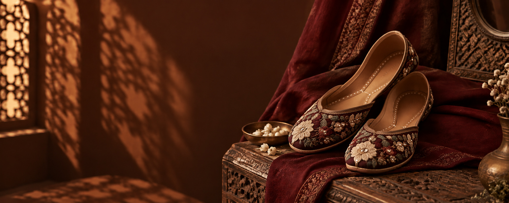

Our Story
More Than Footwear, A Heritage
KARIGAR means "artisan" — and every pair we make carries the hands, patience, and tradition of the craftspeople behind it.

Rooted in Tradition
Handcrafted by Skilled Artisans
At KARIGAR, we celebrate the beauty of tradition with a modern touch. Our khussas are handcrafted by skilled artisans, blending cultural heritage with contemporary style for every woman who values authenticity — stitched, beaded, and finished entirely by hand.
Every pattern tells a story passed down through generations of craftsmanship, reimagined for the way you live today.
What We Stand For
Our Values
Traditional Craftsmanship
Every stitch made entirely by hand
Supporting Artisans
Fair work for local craftspeople
Elegant Designs
Heritage patterns, modern silhouettes
Modern Try-On
See it on your feet before you buy